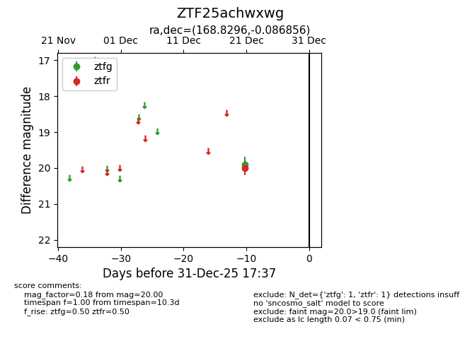
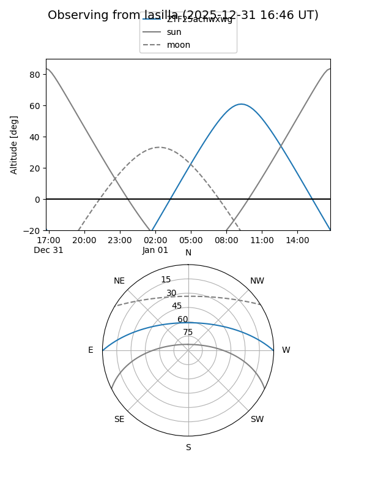
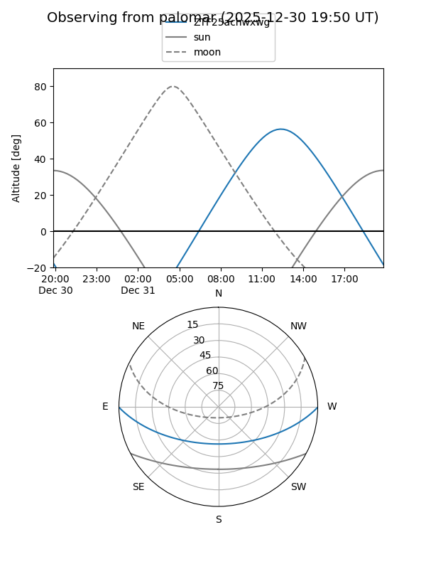

ZTF25achwxwg
Target ZTF25achwxwg at 2025-12-21 13:42
Aliases and brokers:
FINK: fink-portal.org/ZTF25achwxwg
Lasair: lasair-ztf.lsst.ac.uk/objects/ZTF25achwxwg
ALeRCE: alerce.online/object/ZTF25achwxwg
alt names
ZTF25achwxwg (ztf,fink_ztf)
Coordinates:
equatorial (ra, dec) = 168.8296,-0.08686
equatorial (HMS+DMS) = 11:15:19.11,-00:05:12.68
galactic (l, b) = (258.6681,+54.30786)
Flags:
Photometry:
last ztfg=19.90, ztfr=20.00
1 ztfg, 1 ztfr detections
Lightcurve

Visibility


Additional plots